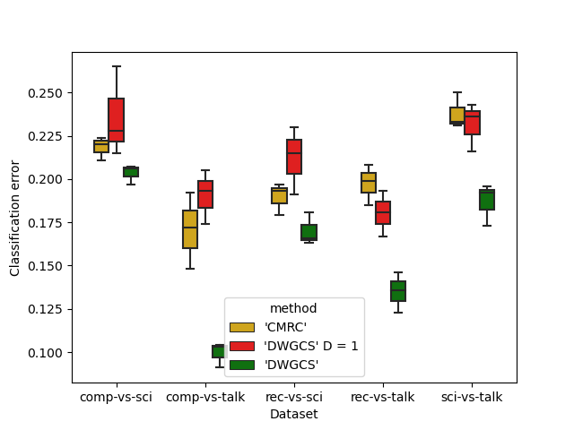

Note
Go to the end to download the full example code
Example: Use of DWGCS (Double-Weighting General Covariate Shift) for Covariate Shift Adaptation#
Example of using DWGCS with the sythetic dataset used on the experiments of the corresponding paper. We load the dataset, train the DWGCS model using data collected from training and testing distribution and predict the new instances from the testing distribution.
import numpy as np
import pandas as pd
import time
from MRCpy import DWGCS
from MRCpy import CMRC
# Import the datasets
from MRCpy.datasets import *
import matplotlib.pyplot as plt
import seaborn as sns
# Data sets
loaders = [load_comp_vs_sci, load_comp_vs_talk, load_rec_vs_sci,
load_rec_vs_talk, load_sci_vs_talk]
dataName = ["comp-vs-sci", "comp-vs-talk", "rec-vs-sci",
"rec-vs-talk", "sci-vs-talk"]
sigma = np.array([23.5628, 23.4890, 24.5642, 25.1129, 24.8320])
rep = 3
n = 1000
t = 1000
columns = ['dataset', 'iteration', 'method', 'error']
results = pd.DataFrame(columns=columns)
for j, load in enumerate(loaders):
# Loading the dataset
X_TrainSet, Y_TrainSet, X_TestSet, Y_TestSet = load()
TrainSet = np.concatenate((X_TrainSet, np.reshape(Y_TrainSet,(Y_TrainSet.shape[0], 1))), axis=1)
TestSet = np.concatenate((X_TestSet, np.reshape(Y_TestSet, (Y_TestSet.shape[0], 1))), axis=1)
for i in range(rep):
np.random.seed(42)
np.random.shuffle(TrainSet)
np.random.seed(42)
np.random.shuffle(TestSet)
X_train = TrainSet[:n, :-1]
Y_train = TrainSet[:n, -1]
X_test = TestSet[:t, :-1]
Y_test = TestSet[:t, -1]
#CMRC
clf = CMRC(loss = '0-1', phi = 'linear', fit_intercept = False, s = 0)
clf.fit(X_train, Y_train, X_test)
Error1 = clf.error(X_test, Y_test)
#DWGCS D = 4
clf2 = DWGCS(loss = '0-1', phi = 'linear', sigma_ = sigma[j], D = 1)
clf2.fit(X_train, Y_train, X_test)
Error2 = clf2.error(X_test, Y_test)
#DWGCS D = 4
clf3 = DWGCS(loss = '0-1', phi = 'linear', sigma_ = sigma[j])
clf3.fit(X_train, Y_train, X_test)
Error3 = clf3.error(X_test, Y_test)
new_row = {'dataset': dataName[j],
'iteration' : i,
'method' : '\'CMRC\'',
'error': Error1}
results.loc[len(results)] = new_row
new_row = {'dataset': dataName[j],
'iteration' : i,
'method' : '\'DWGCS\' D = 1',
'error': Error2}
results.loc[len(results)] = new_row
new_row = {'dataset': dataName[j],
'iteration' : i,
'method' : '\'DWGCS\'',
'error': Error3}
results.loc[len(results)] = new_row
Set parameter Username
Academic license - for non-commercial use only - expires 2024-04-06
sns.boxplot(x = results['dataset'],
y = results['error'],
hue = results['method'],
palette={'\'CMRC\'' : '#ecb500', '\'DWGCS\' D = 1' : 'red', '\'DWGCS\'' : 'green'},
width=0.5)
plt.xlabel("Dataset")
plt.ylabel("Classification error")
plt.show()

Total running time of the script: ( 25 minutes 54.211 seconds)